> 민속마을 > 살거리마당
살거리마당
기념품
전통을 담고있는 다양한 상품을 만나보세요
-
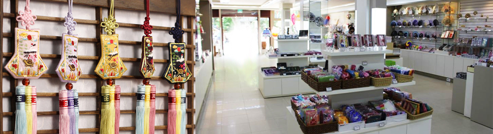
- 기념1매장
- 전통을 담은 다양한 상품이 있는 곳
- 상가마을 기념1 매장은 ㄷ 자형 팔작 기와 건물로 50여 평의 넓은 매장으로 민화, 부채, 탈과 같은 전통 상품과 다양한 안내책자, 기념 엽서 및 각종 상품을 전시 판매하고 있습니다
-
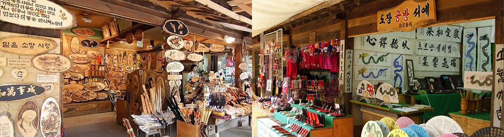
- 장터 기념품 매장
- 한국민속촌 공방 특제상품과 전통기념품이 가득한 곳
- 장터와 전통 공방거리 가운데 위치하고 있으며, 한국민속촌의 공방에서 생산되고 있는 공예품과 각종 기념상품을 전시, 판매하고 있습니다.
-
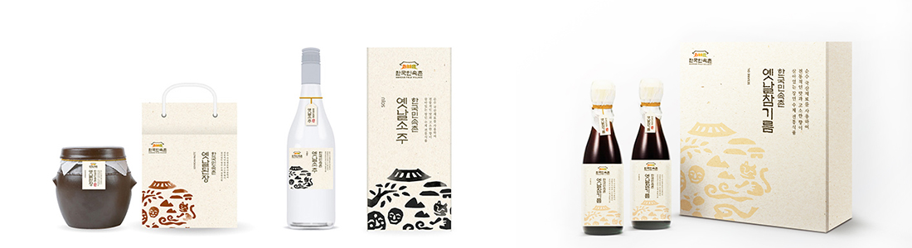
- 농촌 특산품 매장
- 한국민속촌 특산품을 비롯한 다양한 전통상품이 있는 곳
- 한국민속촌 농촌특산품매장은 ‘전통의 명가’ 한국민속촌 농촌특산품을 한자리에 모아 놓은 매장입니다. 순수 우리 콩으로 만든 된장과 태양초 건고추를 사용한 고추장을 비롯한 장류와 기름류, 차류, 주류, 건강식품에 이르는 다양한 농촌특산품을 만나보세요.
공방
옛 멋의 명가, 전통을 담은 다양한 상품이 있는 곳
-
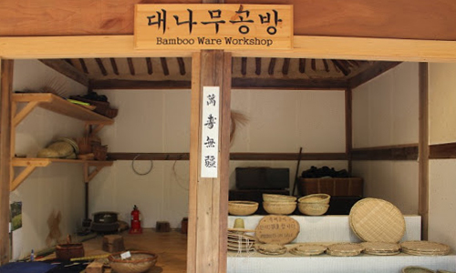
- 죽기공방
- 대나무로 만든 일상생활 제품으로 반짇고리, 방갓, 삿갓, 죽부인, 광주리, 소쿠리 및 가구, 필기구 등이 있습니다.
-
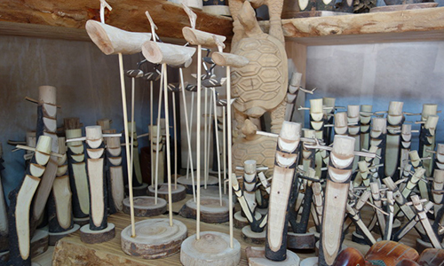
- 목기공방
- 함지, 방망이, 주걱, 소반 등 나무를 이용한 전통생활도구를 만날 수 있습니다.
-

- 옹기공방
- 옹기 생활 체험관에서 직접 도자를 빚고 구울 수 있으며, 다양한 생활용품과 작품도 만나볼 수 있습니다.
-
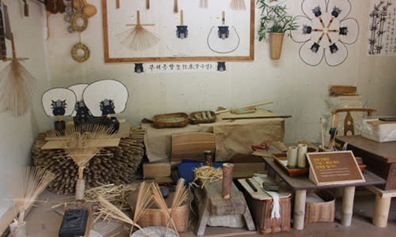
- 부채공방
- 부채공방에서는 부채만들기 체험뿐 아니라, 대나무와 한지를 사용해 만든 전통부채를 구입하실 수 있습니다.
-
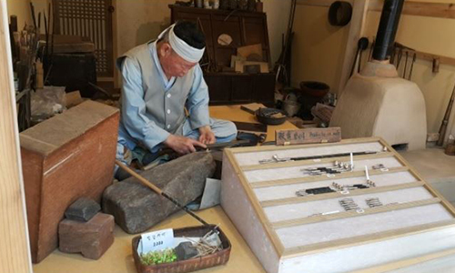
- 유기공방
- 장인이 정성으로 제작한 유기제품을 만날 수 있습니다. 인기상품인 유기수저와 수제 담뱃대를 비롯해 다양한 상품이 준비되어 있습니다.
-
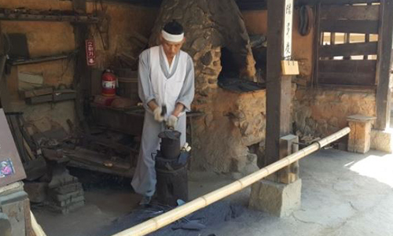
- 대장간
- 대장장이가 직접 쇠를 녹이고 두드려 만든 다양한 상품들을 판매하고 있습니다. 농기구를 비롯해 다양한 생활도구와 연장들을 만나보실 수 있습니다.
-

- 낙화공방
- 섬세한 표현이 가능해 산수화, 풍속화 및 인물화까지 여러가지 인두화를 감상할 수 있습니다.
-
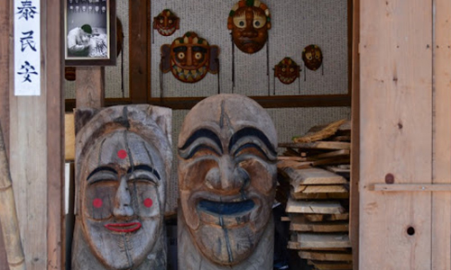
- 탈공방
- 탈 공방에서는 직접 손으로 깎아 제작하는 나무 탈 공예 시연과 함께 다양한 종류의 탈 공예품을 만날 수 있습니다.
-
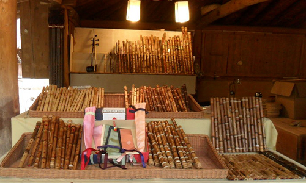
- 악기공방
- 단소와 대금 등 나무로 만든 전통악기를 구매할 수 있습니다.
-
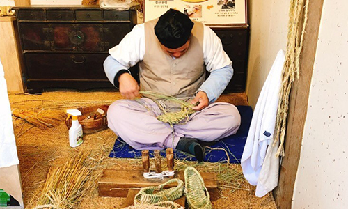
- 짚신공방
- 짚신공방에서는 장인이 직접 볏짚을 엮어 만든 짚신을 판매하고 있습니다. 외국인들에게 특히 인기 있는 공예품입니다.